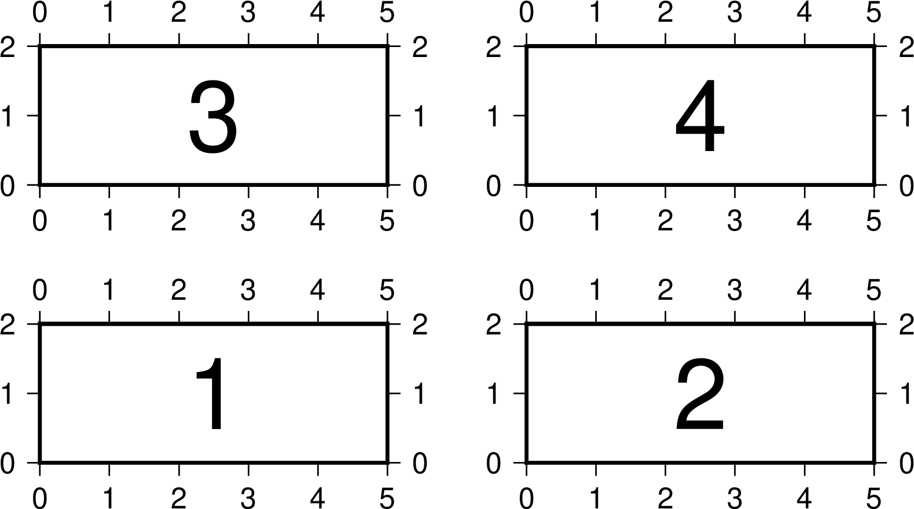

-X 和 -Y 選項¶
-X 和 -Y 選項用於控制繪圖原點在X和Y方向的偏移量。
當需要在一張圖上繪製多個子圖時，通常可以使用GMT提供的 子圖模式。若子圖的佈局不規則，或對於子圖原點有更復雜的需求，則需要使用 -X 和 -Y 選項移動子圖的底圖原點的位置。
-X 和 -Y 的用法類似。下面僅以 -X 選項爲例介紹其用法。其語法爲：
-X[a|c|f|r][xshift[u]]
其中 xshift 是新原點相對於當前原點的X方向偏移量，u 爲偏移量的單位。
在偏移量之前加上不同的字符表示不同的含義：
- -X2i 或 -Xr2i：在原底圖原點的基礎上沿X方向偏移2英寸得到新底圖原點
- -Xa5c：在原底圖原點的基礎上沿X方向偏移5釐米得到臨時底圖座標，當前命令執行完成後，底圖原點復原到原底圖原點
- -Xc：將底圖中心放在整張紙的中心
- -Xc3c：將底圖中心放在紙張中心，在此基礎上沿X方向偏移3釐米
- -Xf4c：在紙張左下角的基礎上沿着X方向偏移4釐米得到新底圖原點
- -X 不接任何額外參數，則繼承前一個GMT命令使用該選項時的參數值
-X 和 -Y 選項的用法介紹起來有些難度，多試試就好。下面舉個簡單的例子:
gmt begin test pdf
gmt basemap -JX5c/2c -R0/5/0/2 -B1
gmt basemap -B1 -X7c
gmt basemap -B1 -X-7c -Y4c
gmt basemap -B1 -X7c
gmt end
上圖用四個 basemap 命令繪製了四張底圖，繪圖效果如下：

解釋：
- 第一個命令的繪圖原點位於紙張左下角，繪製底圖1
- 第二個將繪圖原點右移了7 cm，繪製底圖2
- 爲了繪製底圖3，第三個命令將底圖左移了7 cm，並上移4 cm
- 第四個命令在底圖3的基礎上右移7 cm，繪製底圖4
實際繪圖時會發現一些不方便的地方。比如 -X 和 -Y 的偏移量與前一張底圖的大小息息相關。若修改了前一張底圖的大小，則下一張底圖的偏移量也需要相應修改。爲解決這一問題，GMT6引入了一種新的語法：
-X[+|-]w[[+|-|/]xshift[u]] -X[+|-]h[[+|-|/]xshift[u]]
其中 w 和 h 分別表示前一底圖的寬度和高度。
看上去語法很複雜，舉幾個例子：
- -Yh+2c：沿着Y軸上移，上移距離爲前一底圖高度+2釐米
- -Xw-2c：沿着X軸右移，右移距離爲前一底圖寬度-2釐米
- -Xw/2：沿着X軸右移，右移距離爲前一底圖寬度/2
- -Y-h-2c：沿着Y軸下移，下移距離前一底圖高度+2釐米
- -X-w+2c：沿着X軸左移，左移距離前一底圖寬度-2釐米
因而，上面的示例可以改寫爲更靈活的版本:
gmt begin test pdf
gmt basemap -JX5c/2c -R0/5/0/2 -B1
gmt basemap -B1 -Xw+2c
gmt basemap -B1 -X-w-2c -Yh+2c
gmt basemap -B1 -Xw+2c
gmt end